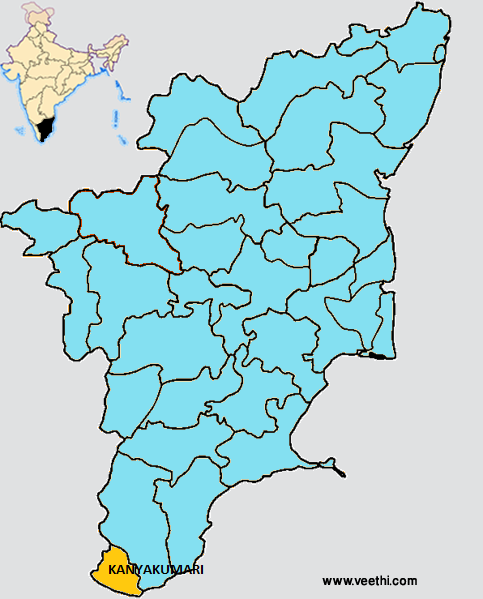

Boundaries of Kanyakumari District
North: Western Ghats, Tiruvelveli District, Tamil Nadu
South and South West: Indian Ocean, Arabian Sea
South East: Gulf of Mannar in Bay of Bengal
East: Tirunelveli District, Tamil Nadu
West: Thiruvananthapuram District, Kerala
Kanyakumari District Average Rainfall: 1465 mm
Kanyakumari District Average Temperature in Summer: 27 deg C
Kanyakumari District Average Temperature in Winter: 16 deg C
KANYAKUMARI DISTRICT MAP

Major Rivers: Tambaraparani River, Kodayar, Paralayar, Valliar, Thoovalar, Pazhayar, Pahrali River
Taluks: Thovalai, Agastheeswaram, Kalkulam, Vilavancode
Municipalities: Nagarcoil, Padmanabhapuram, Colachel, Kuzhithurai
Assembly Constituencies: Colachel, Kanniyakumari, Killiyoor, Nagercoil, Padmanabhapuram, Thiruvattar, Vilavancode
Reserve Forests: Therkumalai East and West, Thadagaimalai, Poigaimalai, Mahendragiri, Veerapuli, Vellimalai, Old Kulasekaram, Kilamalai, Asambu.
Total Forest Area: 504.86 square kilometers
Kanyakumari District Nearby Attractions
1. Mahatma Gandhi Memorial
2. Thiruvalluvar Statue
3. Kamarajar Maniandapam
4. Vivekananda Rock Memorial
5. Sri Sthanumalayan Temple at Suchindrum
6. Kanyakumari Bagavathiamman Temple
7. Udayagiri Fort
8. Mathur Hanging Bridge
9. St. Xavier Church
Kanyakumari District Facts: This is the second smallest district in Tamil Nadu after Chennai District. The district is connected to other cities by NG 7 and NH 47. The largest windmill in the world is located in this district at Aralvoimozhy led by Suzlon Energy ad Micon. Two hydroelectric power stations are located at Kodayar.
Major Agricultural Products: Paddy, groundnut, coconut, cashew, rubber, fruits, spices
Natural Resources: It has rich deposits of Zircon, ilmenite, Monazite, Thorium, Zirconium
What is Kanyakumari District Famous For: Vivekananda Rock Memorial, Mathur Hanging Trouch , the highest and longest in Asia
Famous People From Kanyakumari District: Writer Jayamohan, Politician Kumari Anandan, Tamil Poet Kavimani Thesiga Vinayagam Pillai, Fomer Governor of Reserve Bank of India S. Venkitaraman, Politician N. Dennis, Malayalam actor Thikkurissi Sukumaran Nair, Congress Leader Kunjan Nadar
Kanyakumari Pin Codes
Last Updated : Thursday Sep 27 , 2012